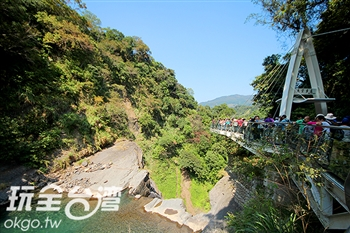
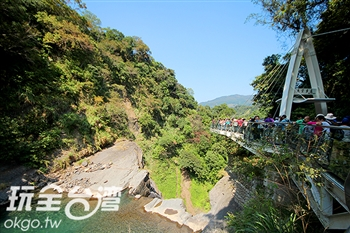

景點介紹
「小烏來天空步道」嶄立在風動石旁並懸空於小烏來瀑布上方，由桃園縣政府耗資新台幣800萬元打造。步道外觀設計簡約大方，採幾何線條配置，在森林景觀中有了點衝突的美；底部為強化玻璃的建築結構，凌空伸出11公尺的廊道，距離瀑布底約有70公尺高，走在步道橋面玻璃平台上，彷彿漫步在雲端，360度視野欣賞小烏來秀麗溪谷及氣勢磅礡的瀑布景觀。
「小烏來天空步道」嶄立在風動石旁並懸空於小烏來瀑布上方，由桃園縣政府耗資新台幣800萬元打造。步道外觀設計簡約大方，採幾何線條配置，在森林景觀中有了點衝突的美；底部為強化玻璃的建築結構，凌空伸出11公尺的廊道，距離瀑布底約有70公尺高，走在步道橋面玻璃平台上，彷彿漫步在雲端，360度視野欣賞小烏來秀麗溪谷及氣勢磅礡的瀑布景觀。
